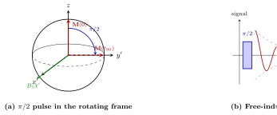
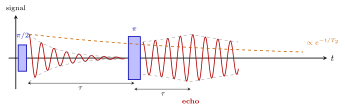
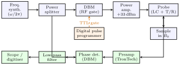
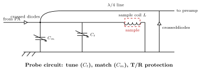

8 Pulsed NMR and the MIT spin-echo lab
8.1 From superconducting qubits to nuclear spins
Chapters 5–6 built a two-level quantum system on a chip: a transmon qubit dispersively coupled to a microwave resonator, driven and read out with GHz pulses. Nothing in that construction is specific to superconducting circuits. The nuclear spin-1/2 — a proton in a magnetic field — is the original two-level quantum system, first manipulated coherently by Rabi (1938), Bloch (1946) and Purcell (1946), and it obeys the same Bloch-equation phenomenology that today describes a transmon on the Bloch sphere. Almost every quantitative concept we used in Ch. 5–6 was born in a nuclear-magnetic-resonance (NMR) laboratory:
- Rabi flopping on resonance \(\leftrightarrow\) transmon rotations driven by a microwave tone;
- \(T_1\) (energy relaxation) and \(T_2\) (dephasing) \(\leftrightarrow\) the same two decay channels that limit any qubit;
- Chemical shift + FID spectrum \(\leftrightarrow\) dispersive photon-number-resolved spectroscopy;
- Spin echo (Hahn 1950) \(\leftrightarrow\) dynamical decoupling of a transmon against low-frequency flux noise;
- Dilution refrigerator with a mixing chamber \(\leftrightarrow\) the very same cryostats used to cool superconducting qubit chips.
The purpose of this chapter is therefore twofold. First, we develop pulsed NMR in its own right, starting from Zeeman splitting and Larmor precession and ending with the standard sequences (Hahn echo, CPMG, inversion recovery) used to measure \(T_1\) and \(T_2\). Second, we walk through the concrete apparatus of the MIT Junior-Lab pulsed-NMR experiment — permanent magnet, tuned LC probe, T/R switch, quadrature phase detector, digital pulse programmer — so that the abstract sequences map onto real signals visible on an oscilloscope. The chapter closes with a direct comparison table between nuclear-spin NMR and circuit QED.
8.2 Zeeman splitting and Larmor precession
Consider a nucleus of spin \(I\) (for the proton \(I=1/2\)) with magnetic dipole moment \[ \hat{\boldsymbol\mu} = \gamma\, \hat{\mathbf S} = \gamma\hbar\, \hat{\mathbf I}, \] where \(\gamma\) is the gyromagnetic ratio (a scalar that depends on the nuclear species: for the proton \(\gamma_p/2\pi = 42.577\,\text{MHz/T}\); equivalently \(\gamma_p = 2.675\times 10^{8}\,\text{rad/(s\,T)}\)). Placed in a static magnetic field \(\mathbf B_0 = B_0\hat{\mathbf z}\), the Hamiltonian is \[ \hat H_0 \;=\; -\hat{\boldsymbol\mu}\cdot\mathbf B_0 \;=\; -\gamma\hbar B_0\, \hat I_z. \tag{7.1} \] Its eigenstates are the \(I_z\)-eigenstates \(|m\rangle\) with \(m=-I,\dots,+I\), and the energies form an equally-spaced ladder \[ E_m = -m\,\hbar\omega_0, \qquad \omega_0 \equiv \gamma B_0 \;\;(\text{Larmor frequency}). \tag{7.2} \]
Classical picture. In the Heisenberg picture the expectation value \(\boldsymbol\mu(t) = \langle\hat{\boldsymbol\mu}\rangle(t)\) obeys \[ \frac{d\boldsymbol\mu}{dt} \;=\; \gamma\,\boldsymbol\mu\times\mathbf B_0, \tag{7.3} \] i.e. a classical precession of the dipole vector around \(\mathbf B_0\) at the Larmor frequency \(\omega_0\), in complete analogy with a gyroscope in a gravitational field. This is Ehrenfest’s theorem for spins: even though the individual quantum spins carry an intrinsically discrete \(I_z\), the ensemble magnetisation \(\mathbf M = \sum_i \boldsymbol\mu_i\) behaves exactly like a classical vector precessing at \(\omega_0\). All of pulsed NMR is built on this observation.
8.3 The rotating frame and RF pulses
To manipulate the spins one adds a transverse, oscillating magnetic field generated by an RF coil whose axis is perpendicular to \(\mathbf B_0\). In the lab frame the field along \(\hat{\mathbf x}\) can be written as a linearly polarised RF field, \[ \mathbf B_1^{\text{lab}}(t) \;=\; 2 B_1 \cos(\omega t)\,\hat{\mathbf x} \;=\; B_1\bigl[\cos\omega t\,\hat{\mathbf x} + \sin\omega t\,\hat{\mathbf y}\bigr] \;+\; B_1\bigl[\cos\omega t\,\hat{\mathbf x} - \sin\omega t\,\hat{\mathbf y}\bigr]. \tag{7.4} \] The two brackets are counter-rotating circularly polarised components. Only the one co-rotating with the natural Larmor precession stays in phase with the spins; the other averages out and is dropped (this is the rotating-wave approximation, exactly the same one that we used to derive the Jaynes–Cummings Hamiltonian in Ch. 6).
Transform to a frame rotating clockwise about \(\hat{\mathbf z}\) at frequency \(\omega\). In that frame the co-rotating component of \(\mathbf B_1\) appears static, pointing along the rotating-frame \(\hat{\mathbf x}'\) axis, while \(\mathbf B_0\) is partially cancelled by a “fictitious” field \(-\omega/\gamma\) arising from the kinematics of the frame: \[ \mathbf B_{\text{eff}} \;=\; \Bigl(B_0 - \frac{\omega}{\gamma}\Bigr)\hat{\mathbf z} \;+\; B_1\,\hat{\mathbf x}'. \tag{7.5} \]
\(\pi/2\) and \(\pi\) pulses. If the RF is turned on for a duration \(t_p\), the magnetisation rotates by an angle \(\theta = \omega_1 t_p = \gamma B_1 t_p\) about \(\hat{\mathbf x}'\). Two special durations are used constantly:
- \(\pi/2\) pulse (\(t_{90} = \pi/(2\gamma B_1)\)): tips \(\mathbf M\) from \(\hat{\mathbf z}\) into the transverse plane. The equilibrium longitudinal magnetisation \(M_0\) becomes a transverse magnetisation \(M_\perp = M_0\) precessing at \(\omega_0\) in the lab frame.
- \(\pi\) pulse (\(t_{180} = 2 t_{90}\)): inverts \(\mathbf M\) from \(+\hat{\mathbf z}\) to \(-\hat{\mathbf z}\) (or reflects the transverse magnetisation about the \(\hat{\mathbf x}'\)-axis).
Off-resonance (\(\omega\neq\omega_0\)), \(\mathbf B_{\text{eff}}\) tilts out of the transverse plane and the rotation axis is no longer purely \(\hat{\mathbf x}'\); the effective precession frequency becomes \(\omega_{\text{eff}}=\gamma|\mathbf B_{\text{eff}}| = \sqrt{\omega_1^2 + (\omega_0-\omega)^2}\), and the maximum reachable tip angle is limited. This is the exact analogue of the transmon Rabi problem in Ch. 5.

8.4 The Bloch equations
Once the RF pulse is turned off, the spins are no longer isolated: they exchange energy with the surrounding “lattice” (any degrees of freedom other than the spin subsystem itself — molecular motion, phonons, other spins) and they interact weakly with each other. Bloch (1946) parametrised these two effects phenomenologically by two decay times: the longitudinal or spin-lattice time \(T_1\), and the transverse or spin-spin time \(T_2\). The resulting equations of motion for the magnetisation vector \(\mathbf M(t)\) read
\[ \boxed{\; \begin{aligned} \frac{dM_x}{dt} &= \gamma\,(\mathbf M\times\mathbf B)_x \;-\; \frac{M_x}{T_2},\\[2pt] \frac{dM_y}{dt} &= \gamma\,(\mathbf M\times\mathbf B)_y \;-\; \frac{M_y}{T_2},\\[2pt] \frac{dM_z}{dt} &= \gamma\,(\mathbf M\times\mathbf B)_z \;-\; \frac{M_z - M_0}{T_1}. \end{aligned}\;} \tag{7.6} \]
The first term is the classical torque equation @eq:torque; the additional relaxation terms drive the longitudinal component back to its equilibrium value \(M_0\) and the transverse components to zero.
8.5 Free-induction decay (FID)
Immediately after a \(\pi/2\) pulse the magnetisation lies in the transverse plane, precessing at \(\omega_0\). A pickup coil wound about the sample (in practice, the same coil that delivered the RF pulse) picks up an oscillating emf by Faraday’s law: \[ V(t) \;=\; V_0\,\cos(\omega_0 t + \varphi_0)\; e^{-t/T_2^*}, \tag{7.7} \] where the exponential envelope reflects the transverse decay of \(\mathbf M_\perp\) with an effective transverse time \(T_2^*\) (see next section). This transient voltage is the free-induction decay (FID).
The Fourier transform of the FID is a Lorentzian centred at \(\omega_0\) with half-width at half-maximum \(1/T_2^*\): \[ S(\omega) \;=\; \frac{V_0\,T_2^*}{1 + (\omega-\omega_0)^2 (T_2^*)^2}. \tag{7.8} \]
8.6 Inhomogeneous broadening and the spin echo
In a perfectly uniform field \(B_0\) the free-induction envelope decays with the intrinsic transverse time \(T_2\). In practice, however, \(B_0\) has a spatial inhomogeneity \(\Delta B_0\) across the sample volume, so different parts of the sample precess at slightly different Larmor frequencies \(\omega_0^{(i)} = \gamma [B_0 + \delta B_i]\). After a time \(\sim 1/(\gamma\,\Delta B_0)\) the isochromats have fanned out over the transverse plane and the net transverse magnetisation has averaged to zero — even though each individual spin packet is still coherent.
Hahn’s insight (1950). The reversible part of the dephasing can be undone by applying a \(\pi\) pulse a time \(\tau\) after the initial \(\pi/2\) pulse. Consider two isochromats precessing at \(\omega_0 \pm \delta\omega\): at time \(\tau\) they have accumulated phase difference \(\pm\delta\omega\,\tau\) about \(\hat{\mathbf z}\). A \(\pi\) pulse about \(\hat{\mathbf x}'\) reflects both phases: \(+\delta\omega\,\tau \to -\delta\omega\,\tau\). Because the isochromats continue to precess in the same direction after the pulse, a further time \(\tau\) later they have again accumulated \(\pm\delta\omega\,\tau\) — which now exactly cancels the reflected phase, and the isochromats refocus. The transverse magnetisation reappears at \(t = 2\tau\): this is the Hahn spin echo.
The echo amplitude is reduced compared to the initial FID only by the intrinsic, irreversible dephasing \(T_2\) (plus, at large \(\tau\), by diffusion effects; see below): \[ M_\perp(2\tau) \;=\; M_0\, e^{-2\tau/T_2}. \tag{7.10} \] Measuring the echo amplitude as a function of \(\tau\) therefore isolates the true transverse relaxation time.

8.7 Standard pulse sequences
The Hahn echo generalises to a family of sequences that isolate different relaxation channels. Each sequence is specified by (i) pulse angles, (ii) inter-pulse delays, and (iii) what to measure.
8.7.1 Hahn echo — measurement of \(T_2\)
\[ \underbrace{(\pi/2)_x}_{\text{creates }M_\perp} \;-\;\tau\;-\; \underbrace{(\pi)_x}_{\text{refocuses}} \;-\;\tau\;-\; \underbrace{\text{echo}}_{\propto e^{-2\tau/T_2}}. \]
Repeat with a monotonically increasing \(\tau\); plot echo amplitude vs. \(2\tau\) on a log axis; the slope gives \(-1/T_2\).
8.7.2 CPMG — Carr–Purcell–Meiboom–Gill for \(T_2\) at large delay
The Hahn echo has one weakness: for large \(\tau\), molecular diffusion carries spins across the field gradient \(G\) during the sequence, so different isochromats no longer see the same \(\delta B\) before and after the \(\pi\) pulse. The refocusing is imperfect and the echo amplitude picks up an extra factor \[ E(2\tau) \;=\; E_0\,\exp\!\Bigl(-\frac{2\tau}{T_2} -\tfrac{2}{3}\gamma^2 G^2 D\,\tau^3\Bigr). \tag{7.11} \] Carr and Purcell (1954) — later refined by Meiboom and Gill (1958), giving CPMG — replace the single \(\pi\) pulse with a train: \[ (\pi/2)_x \;-\; \tau \;-\; \bigl[(\pi)_y \;-\; 2\tau \;-\; \text{echo}\bigr]_{\text{repeat}\;N\text{ times}}. \] Because \(\tau\) can be made small (short inter-echo interval), the diffusion term \(\gamma^2 G^2 D\,\tau^3\) is suppressed. The Meiboom–Gill trick — rotating the successive \(\pi\) pulses by 90° about \(\hat{\mathbf y}'\) instead of \(\hat{\mathbf x}'\) — additionally cancels the accumulation of small errors in the \(\pi\)-pulse calibration, so that hundreds or thousands of echoes can be recorded from a single initialisation. This is exactly the same trick used in modern superconducting-qubit experiments as dynamical decoupling to extend \(T_2^{\text{echo}}\) (Carr–Purcell), \(T_2^{\text{CPMG}}\), and their higher-order XY-\(n\) cousins.
8.7.3 Inversion recovery — measurement of \(T_1\)
\[ (\pi)_x \;-\; \tau \;-\; (\pi/2)_x \;-\; \text{measure FID}. \] The first \(\pi\) pulse flips \(M_z\) from \(+M_0\) to \(-M_0\). During the delay \(\tau\) the longitudinal magnetisation relaxes according to \[ M_z(\tau) \;=\; M_0\bigl(1 - 2 e^{-\tau/T_1}\bigr). \tag{7.12} \] The trailing \(\pi/2\) pulse tips whatever \(M_z\) has been recovered into the transverse plane, where the FID amplitude is read out. In particular \(M_z(\tau) = 0\) at \(\tau = T_1\ln 2\) — the well-known “zero crossing” that gives \(T_1\) directly if you can find the delay that nulls the FID.
An alternative, sometimes gentler in practice, is the 90°–90° saturation-recovery sequence: \((\pi/2)_x - \tau - (\pi/2)_x - \text{FID}\). The recovered FID amplitude follows \(M_0(1 - e^{-\tau/T_1})\) instead. Yet another elegant variant, invented by two former MIT Junior-Lab students (Rahul Sarpeshkar and Isaac Chuang), is the three-pulse sequence \(180°-\tau-90°-\varepsilon-180°\) in which the final \(180°\) produces a spin echo whose amplitude reflects \(M_z(\tau)\) — this replaces the difficult “read the FID amplitude right after a pulse” step by a cleaner off-pulse echo measurement.
8.8 The MIT pulsed-NMR apparatus
The MIT Junior-Lab experiment implements every one of the sequences above with a compact bench setup that fits in a single 19-inch rack. This section walks through it block by block.
8.8.1 Overview and signal chain

8.8.2 Permanent magnet and shim region
The static field is produced by a permanent magnet delivering \(B_0 \approx 1770\,\text{G} = 0.177\,\text{T}\), corresponding to a proton Larmor frequency \(\omega_0/2\pi = \gamma_p B_0/2\pi \approx 7.5\,\text{MHz}\) and a fluorine frequency \(\approx 7.1\,\text{MHz}\). The magnet is uncompensated (no electromagnetic shim coils), so uniformity is achieved mechanically by locating the sample in the “sweet spot” of the pole gap. In practice this means (i) mapping the field with a Hall-effect magnetometer, (ii) marking the optimum probe position, (iii) never bringing ferrous objects near the magnet. Residual inhomogeneity is \(\Delta B_0/B_0 \sim 10^{-4}\), giving \(T_2^* \sim 100\,\mu\text{s}\) — smaller than \(T_2\) for most liquid samples, so inhomogeneity dominates the observed FID and spin echoes are unavoidable.
8.8.3 The RF probe: tuned LC + tune-and-match
The heart of the setup — and the block that trips up first-time users — is the probe circuit. It performs three jobs simultaneously:
- Deliver kilovolt-per-metre RF fields to the sample during the pulse.
- Pick up the microvolt-level induced emf between pulses.
- Present a \(50\,\Omega\) load to the power amplifier and to the preamp.
The circuit is a parallel LC resonator formed by the sample coil \(L\) (ten turns of AWG-18 copper wire wound around a 10,mm NMR tube) and two variable capacitors \(C_t\) (tune) and \(C_m\) (match). At the resonance frequency \(\omega_r = 1/\sqrt{LC_t}\) the coil rings up a large voltage across the sample; the matching capacitor \(C_m\) shifts the input impedance seen from the \(50\,\Omega\) coax so that at \(\omega_r\) the whole network looks like a pure \(50\,\Omega\). Tuning is checked by minimising the reflected power on a directional coupler or by maximising the FID amplitude on the scope.

8.8.4 Transmit/receive protection and the quadrature phase detector
Two crossed pairs of Schottky diodes protect the low-noise preamp from the \(\sim 30\,\text{V}\) peak-to-peak transmit pulses. In series with the power-amp output, the diodes conduct only above \(\sim 0.5\,\text{V}\), so during the pulse they short the transmit power through to the coil; between pulses, the microvolt-level NMR signal cannot turn them on, and they act as open circuits, letting the signal through to the preamp path. A quarter-wavelength coaxial line between the probe tap and the second pair of diodes uses the impedance-inversion property \(Z_{\text{in}} = Z_0^2/Z_{\text{out}}\) to make the shorted diode pair look like an open circuit at the resonator during the transmit pulse — so the resonator is not loaded down.
The preamplifier (TronTech W110F, \(+40\,\text{dB}\) gain, \(\sim 1\,\text{dB}\) noise figure) drives a double-balanced mixer (Mini-Circuits ZRPD-1) whose local-oscillator port is fed the reference copy of the RF from the power splitter. The mixer multiplies the two inputs and lowpass-filters the sum frequency, so its output is proportional to \(\cos[(\omega_0 - \omega)t +\varphi_0]\). This is the beat between the (unknown) Larmor frequency and the (known) synthesizer frequency: mixing the several-MHz NMR signal down to the audio band makes it easy to digitise and to identify resonance — when the beat frequency vanishes, the synthesizer is exactly on Larmor.
8.8.5 Digital pulse programmer
The pulse programmer is a STAMP-microcontroller-based box with four sequence templates hardcoded on the front panel:
- Single pair — one \(\pi/2\!-\!\tau\!-\!\pi\) sequence per trigger.
- Repeated pairs — the same sequence, repeated every “repeat time” \(T_R\) (typically 100,ms, chosen \(\gg T_1\) so that each shot starts from equilibrium).
- Carr–Purcell — a burst of \(N\) equally-spaced \(\pi\) pulses after the initial \(\pi/2\).
- Three-pulse — \(\pi - \tau - \pi/2 - \varepsilon - \pi\) for echo-detected \(T_1\).
The two variable-width pulses PW1 and PW2 (settable in \(1\,\mu\text{s}\) steps) and the delay \(\tau\) are the user’s knobs. Typical values from the lab guide: \(\text{PW1} = t_{90} \approx 24\,\mu\text{s}\), \(\text{PW2} = t_{180} \approx 48\,\mu\text{s}\), \(\tau \approx 2\,\text{ms}\), \(T_R \approx 100\,\text{ms}\). Because the value of \(B_1\) depends on the exact tuning of the probe, \(t_{90}\) must be re-checked every session by finding the PW1 that maximises the FID.
8.8.6 Sample types
The MIT lab supplies several classes of samples that span the physically interesting range of \(T_1\) and \(T_2\):
- Glycerin–water mixtures. Increasing glycerin concentration increases the viscosity and enhances spin–spin dephasing. \(T_2\) is a strong function of glycerin fraction — the classic Bloembergen–Purcell–Pound curve.
- Paramagnetic ion (Fe\(^{3+}\)) solutions. Unpaired electron spins provide extra relaxation channels; \(T_1\) drops dramatically with ion concentration.
- Fluorine samples (trifluoroacetic acid, hexafluorobenzene) to measure the fluorine magnetic moment via \(\omega_0^{(19\text{F})} = \gamma_{19\text{F}} B_0\).
- Distilled and tap water. Long $T_1 $ several seconds; dissolved paramagnetic \(\text{O}_2\) shortens \(T_1\) significantly compared with degassed water — the famous \(50\%\) correction to Bloembergen’s original 1948 measurement.
8.9 Measuring \(T_1\) and \(T_2\) in practice
With every element of the block diagram now identified, a typical two-session Junior-Lab run collapses to the following four bench steps:
- Search for signal. Load a glycerin sample. Use the repeated-pairs sequence with generous initial PW1 = 24,\(\mu\)s, PW2 = 48,\(\mu\)s, \(\tau = 2\,\text{ms}\). Sweep the synthesizer frequency around \(7.5\,\text{MHz}\) and watch channel 1 of the scope for the characteristic beat-loaded FID. When the beat frequency vanishes, \(\omega = \omega_0 = \gamma_p B_0\) — this is the Larmor frequency for protons. Repeat for the \(^{19}\text{F}\) sample at \(\sim 7.1\,\text{MHz}\); the ratio \(\gamma_{19\text{F}}/\gamma_p\) is the deliverable.
- Calibrate \(t_{90}\). Set PW2 = 2\(\times\)PW1 and sweep PW1 until the spin-echo amplitude is maximal. The corresponding PW1 is \(t_{90}\); PW2 is \(t_{180}\). Because \(B_1\) drifts with tuning and temperature, this must be redone every session.
- Measure \(T_2\) by CPMG. Select the Carr–Purcell program with PW1 = \(t_{90}\), PW2 = \(t_{180}\), and a short \(\tau\) (\(\ll T_2\)). Record the train of echo peaks; the peak envelope decays as \(\exp(-t/T_2)\). Representative values: pure water \(T_2\approx 2\,\text{s}\), 100 % glycerin \(T_2 \sim 20\,\text{ms}\), mineral oil \(T_2\sim 30\,\text{ms}\).
- Measure \(T_1\) by inversion recovery (or the three-pulse variant). Set PW1 = \(t_{180}\), PW2 = \(t_{90}\), vary \(\tau\), and record the amplitude of the FID that follows the second pulse. Fit \(M(\tau) = M_0(1-2\exp(-\tau/T_1))\); equivalently, locate the null at \(\tau = T_1 \ln 2\). Representative values: water \(T_1\sim 3\,\text{s}\); glycerin \(T_1\sim 40\,\text{ms}\); \(\text{Fe}^{3+}\)-doped water \(T_1\) from milliseconds down to microseconds depending on concentration.
8.10 Nuclear spins versus superconducting qubits — dictionary
The concepts we just developed for a proton in a permanent magnet map almost line-by-line onto the concepts of Chapters 5–6. This is not a coincidence: NMR was the training ground where these concepts were invented in the 1940s and ’50s, and superconducting-qubit physicists inherited them wholesale.
| Pulsed NMR (Ch. 7) | Circuit QED (Ch. 5–6) |
|---|---|
| Nuclear spin-\(1/2\) in \(\mathbf B_0\) | Transmon two lowest levels \(\{|g\rangle,|e\rangle\}\) |
| Zeeman gap \(\hbar\omega_0 = \hbar\gamma B_0\) | Josephson transition \(\hbar\omega_q\) |
| Larmor precession of \(\mathbf M\) at \(\omega_0\) | Bloch-vector rotation at \(\omega_q\) |
| RF pulse \(B_1\cos\omega t\) | Microwave drive \(\varepsilon(t)\cos\omega_d t\) |
| Rabi frequency \(\omega_1 = \gamma B_1\) | Transmon Rabi \(\Omega = \varepsilon\, d_{ge}/\hbar\) |
| \(\pi/2\) pulse (\(t_{90}\)) | \(R_x(\pi/2)\) single-qubit gate |
| Rotating frame at \(\omega\) | Interaction picture at \(\omega_d\) |
| Rotating-wave approximation | Same RWA as in the JC Hamiltonian (Ch. 6) |
| Free-induction decay \(\propto e^{-t/T_2^*}\) | Ramsey fringes \(\propto e^{-t/T_2^*}\) |
| FID \(\to\) chemical-shift spectrum | Dispersive spectrum \(\to\) photon-number peaks (Schuster 2007) |
| Hahn echo, CPMG | Dynamical decoupling: XY-8, CPMG on qubits |
| \(T_1\) inversion recovery | Qubit \(T_1\) from \(|e\rangle\) decay |
| Inhomogeneous \(\Delta B_0\) across sample | \(1/f\) flux/charge noise across a chip |
| Permanent magnet (0.18 T, 7.5 MHz) | 8-T NbTi + Josephson (5–8 GHz) |
| Sample in liquid at room \(T\) | Chip in dilution refrigerator at 20,mK |
The two experimental cultures differ mostly in energy scale (kHz–MHz for liquid-state NMR vs. GHz for superconducting qubits) and in ensemble size (NMR: \(10^{18}\) spins averaged into a classical \(\mathbf M\); qubit: a single two-level system read out shot-by-shot). Everything else — Bloch equations, rotating-frame reasoning, echo refocusing, \(T_1/T_2\) separation, the four knobs of a pulse programmer — is a direct translation.
8.11 Sources
- Lecturer’s hand-written class notes, “Pulsed Nuclear Magnetic Resonance”, Braggio 2026, 16 pp. (primary source for the theory sections).
- MIT Department of Physics, Pulsed Nuclear Magnetic Resonance: Spin Echoes — Junior Lab guide,
12.nmr.texv. 1.117 (2014), 15 pp. (primary source for the apparatus and measurement sections). - Bloch, F. Nuclear induction. Phys. Rev. 70, 460 (1946).
- Purcell, E. M., Torrey, H. C. & Pound, R. V. Resonance absorption by nuclear magnetic moments in a solid. Phys. Rev. 69, 37 (1946).
- Hahn, E. L. Spin echoes. Phys. Rev. 80, 580 (1950).
- Carr, H. Y. & Purcell, E. M. Effects of diffusion on free precession in nuclear magnetic resonance experiments. Phys. Rev. 94, 630 (1954).
- Meiboom, S. & Gill, D. Modified spin-echo method for measuring nuclear relaxation times. Rev. Sci. Instrum. 29, 688 (1958).
- Bloembergen, N., Purcell, E. M. & Pound, R. V. Relaxation effects in nuclear magnetic resonance absorption. Phys. Rev. 73, 679 (1948).
- Abragam, A. Principles of Nuclear Magnetism. Oxford U.P. (1961) — canonical theory reference.
- Levitt, M. H. Spin Dynamics: Basics of Nuclear Magnetic Resonance. Wiley (2008) — modern textbook.
- Ernst, R. & Anderson, W. Application of Fourier transform spectroscopy to magnetic resonance. Rev. Sci. Instrum. 37, 93 (1966) — foundational paper on Fourier-transform NMR and probe design.